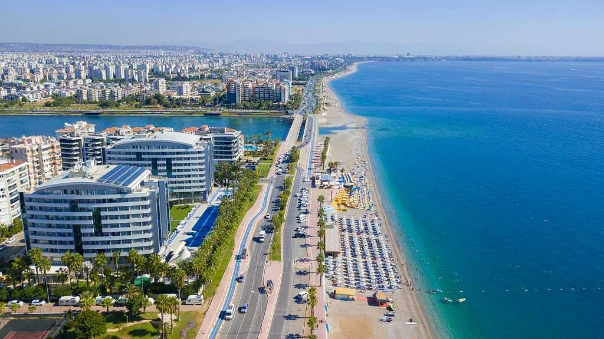

Bienvenue sur notre site dédié à l'exploration de quatre joyaux incontournables : Saint Louis du Sénégal, une ville chargée d'histoire et classée au patrimoine mondial de l'UNESCO ; Vienne, la perle architecturale de l'Autriche où le passé rencontre le contemporain ; Santorin, l'île grecque emblématique aux plages de sable noir et aux villages aux dômes bleus ; et enfin, Antalya, la porte d'entrée vers la Turquie méditerranéenne, où les vestiges antiques se mêlent à la beauté naturelle. Explorez ces destinations uniques et laissez-vous séduire par la diversité culturelle et la splendeur de ces quatre villes fascinantes.
Nos destinations
Saint-Louis

Santorin
Vienne
